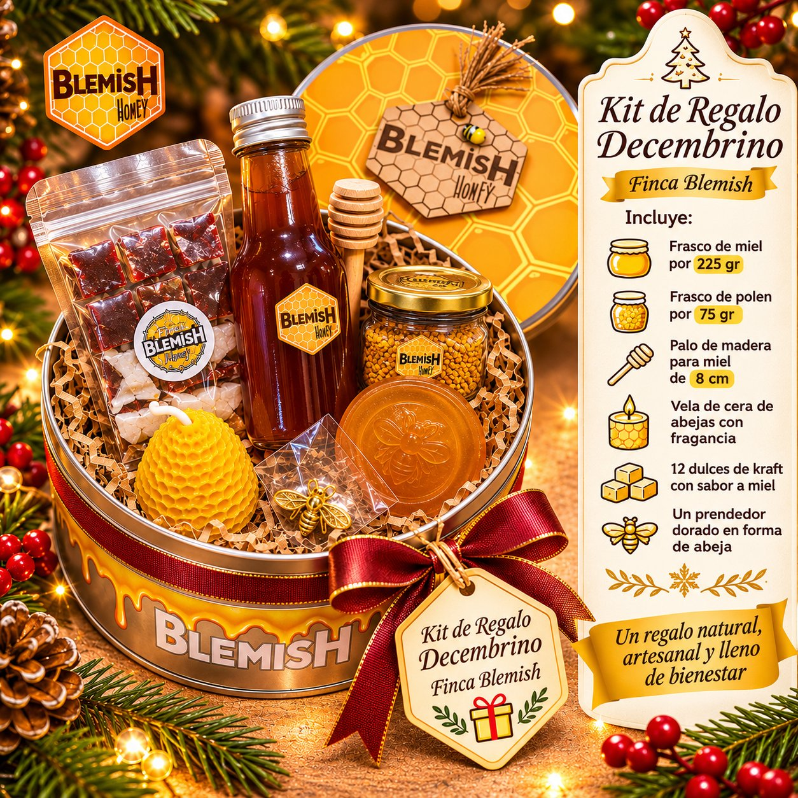

← Volver a Kits de Regalo · Kits de Regalo

Kit Junior Navideño
Kit de regalo navideño · 7 productos de la colmena
$80.000 + IVA
Un regalo natural, artesanal y lleno de bienestar para compartir en Navidad, con productos de las colmenas de Finca Blemish en Jamundí.
Incluye
- Frasco de miel por 225 g
- Frasco de polen por 75 g
- Palo de madera para miel de 8 cm
- Vela de cera de abejas con fragancia
- 12 dulces de kraft con sabor a miel
- Jabón artesanal de glicerina y miel x 50 g
- Un prendedor dorado en forma de abeja
Características
- Origen: Finca Blemish, Jamundí, Valle del Cauca (Colombia)
- Presentación: lata de regalo navideña
- Ideal para regalar en Navidad